|
|
|
|
|
|
| Ours | 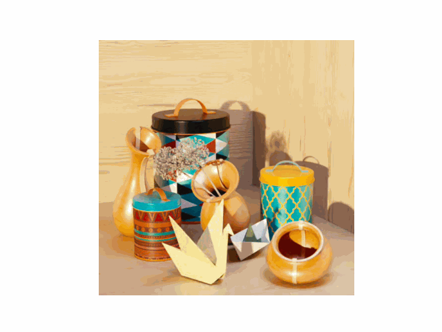 Ours + CNE | 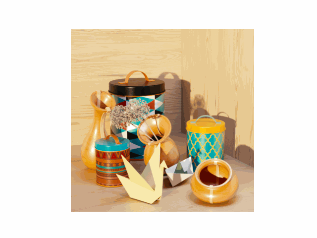 True |
| Ours | Ours + CNE | 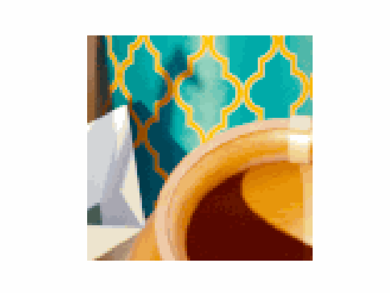 True |
| 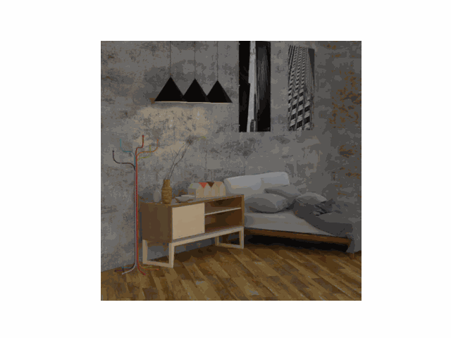 | 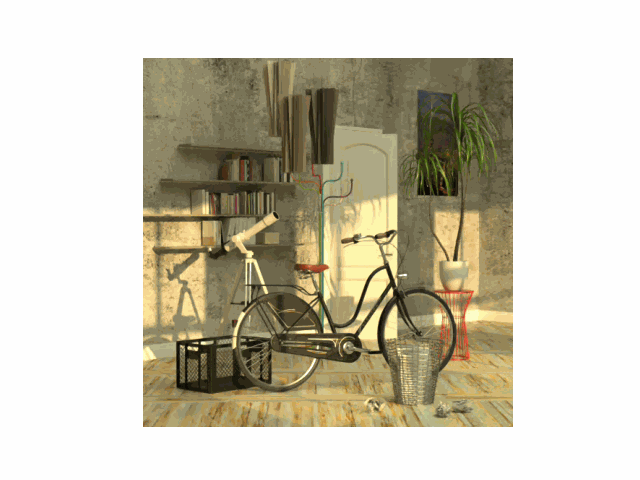 |
| Examples of the full and zoomed-in Origami scene from the HCI Light Field Dataset reconstructed using our method, with and without the addition of the Convolutional Neural Enhancer (CNE), at a bitrate of 0.2bpp. |
| 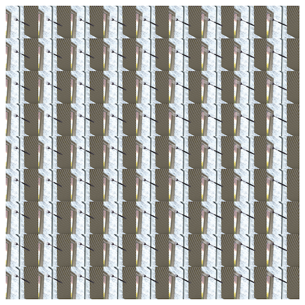 | 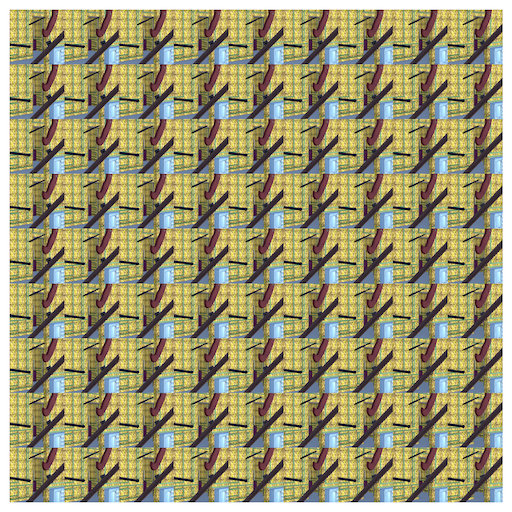 | 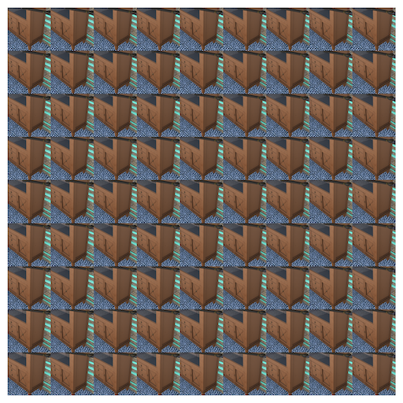 |
| 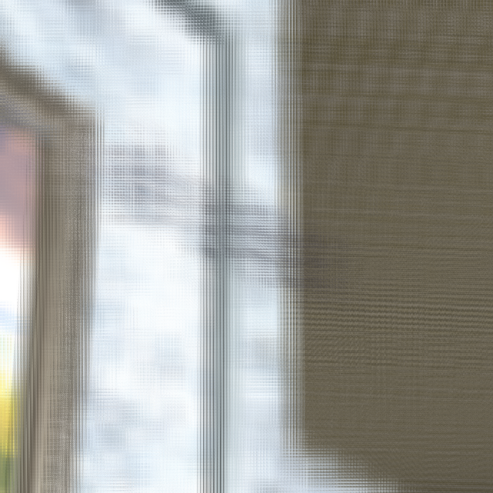 | 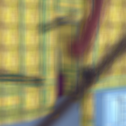 | 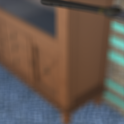 |
| 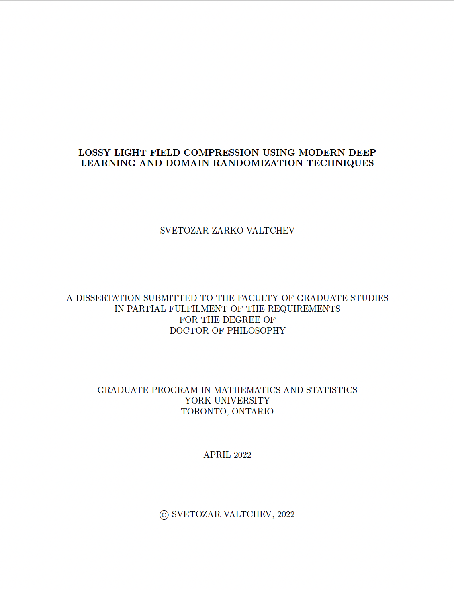 | S.Z. Valtchev. Lossy Light Field Compression Using Modern Deep Learning and Domain Randomization Techniques. YorkSpace, 2022. |
Acknowledgements |